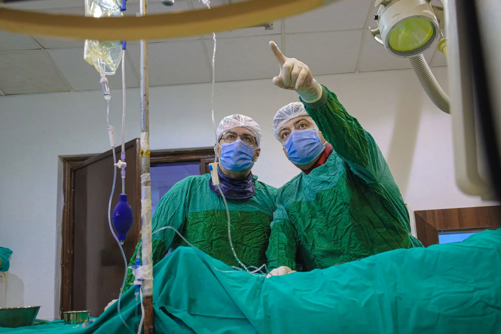
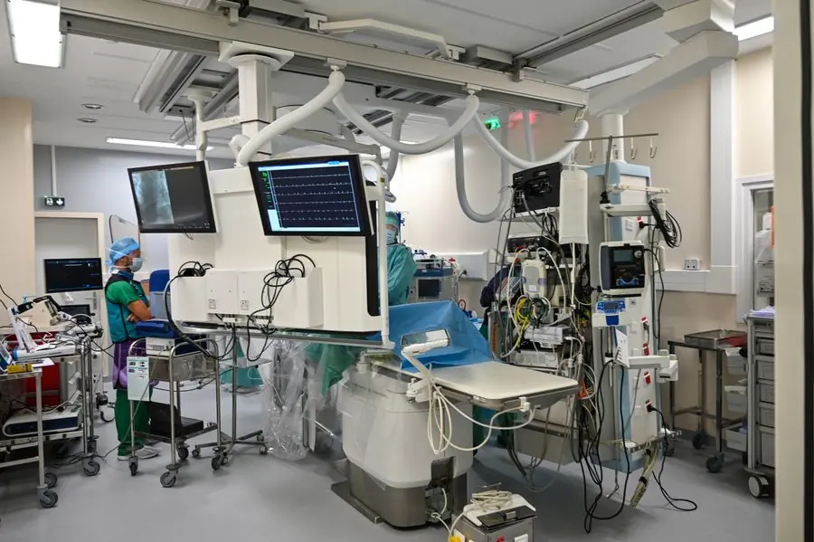
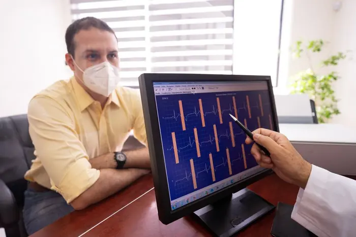
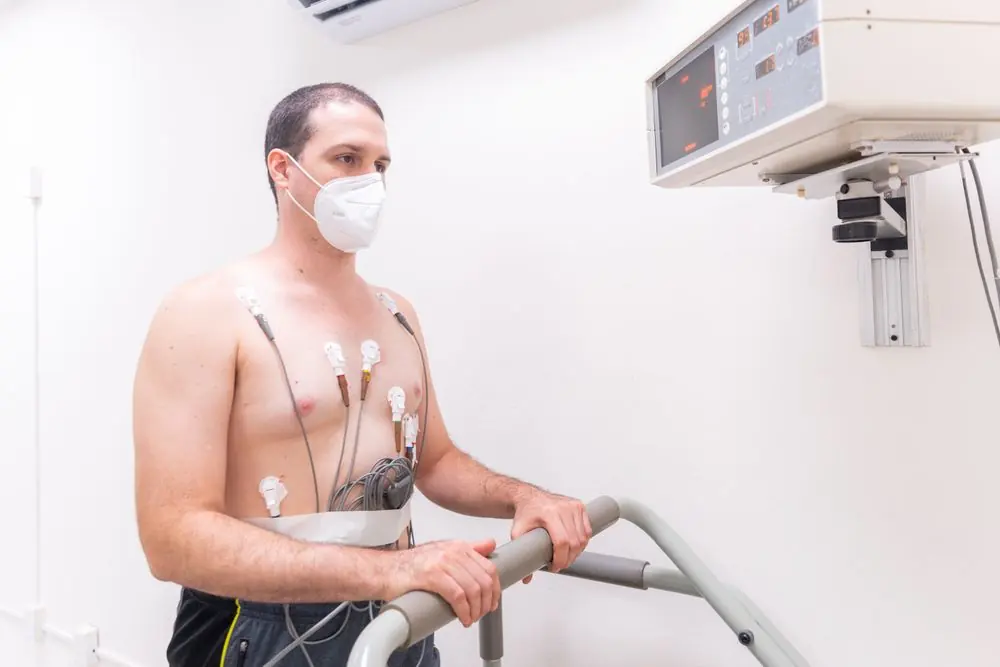
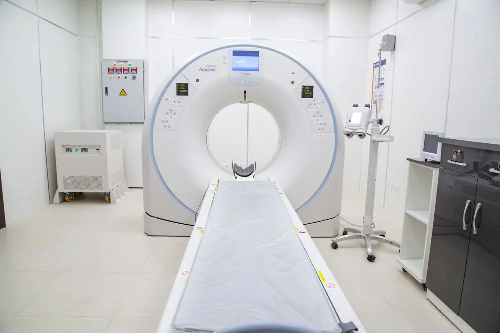
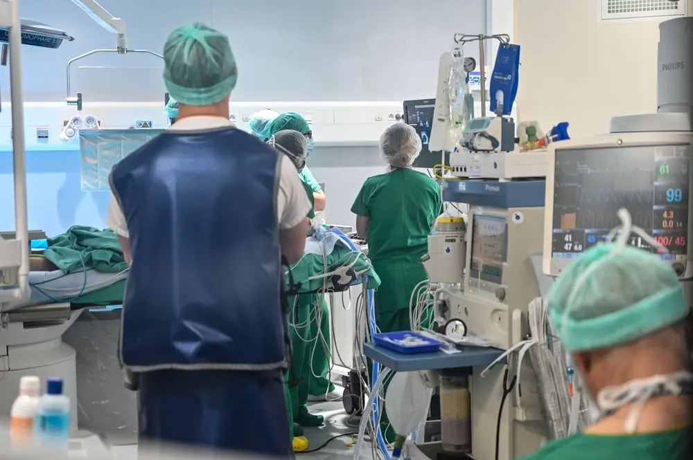
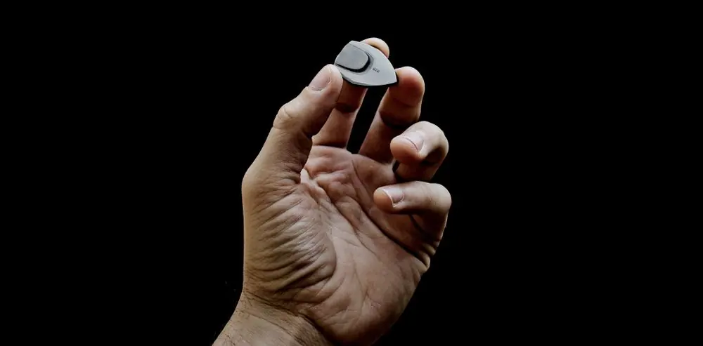
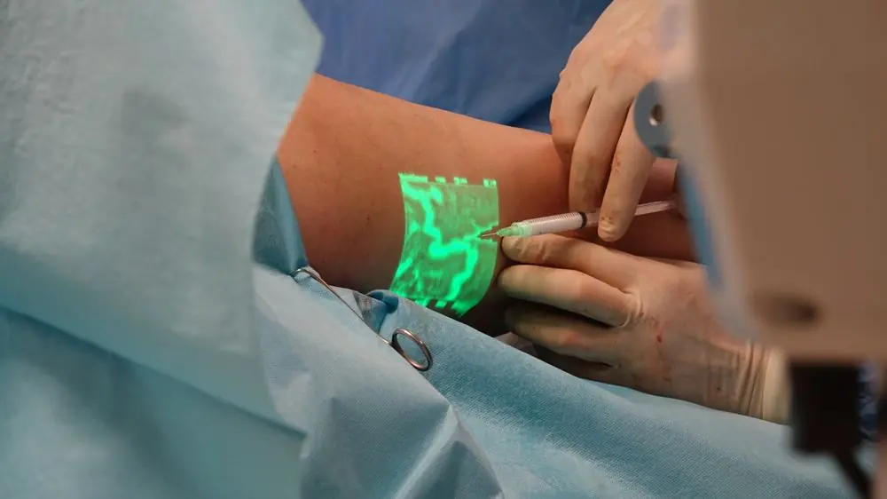
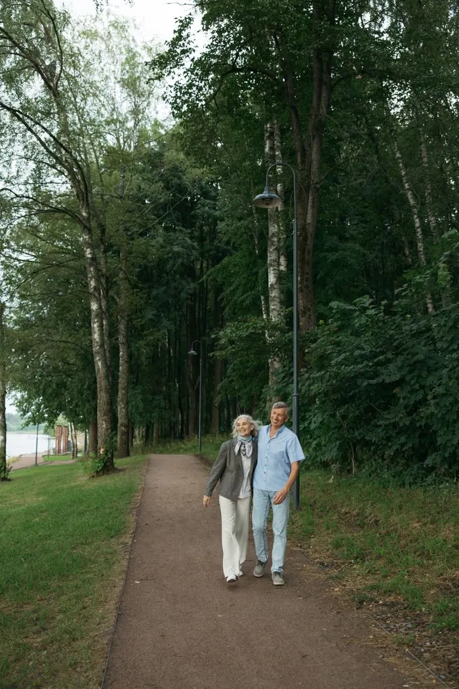
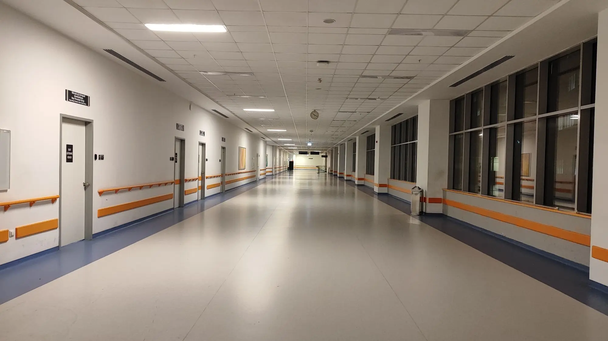

01.
WhatsApp or call
Our 24-hour team asks a few questions and books your consult with Dr Nazrul.

See Dr Mohamed Nazrul, Consultant Cardiologist, at SJMC in Subang Jaya. It starts with one consult, and tests come only if he needs them.
Chest pain right now? Call 999 or go to the nearest emergency department. Don't wait for a reply on WhatsApp.
Qualifications: MBBS (IMU), MRCP, EECC (Europe), HFA (ESC)
Languages: English and Bahasa Melayu
Memberships: NHAM, ICSM and ESC

Clinic days, Monday to Friday
Trained in cardiology at IJN
[One line in Dr Nazrul's own words on how he runs a first consult. Ask him; don't write it for him.]
[Patient story with written consent, for example: Ahmad, Shah Alam, came in after chest tightness on his morning walk.]
[Second patient story, with written consent. First name, area and what they came in with. No outcome promises.]
[Third patient story, with written consent.]

A quick, painless recording of your heart's rhythm and electrical activity.

Your ECG is recorded while you walk on a treadmill, to see how your heart copes with effort.
An ultrasound scan of your heart's chambers, valves and pumping.

A CT scan that shows your heart's arteries and any narrowing.

Opening narrowed or blocked heart arteries, his main focus.

Small implanted devices that keep the heartbeat steady or correct a dangerous rhythm.

Treating blocked arteries in the legs, the other half of his focus.
Measures the pressures on the right side of the heart and in the lung arteries.
No symptoms, just want to know? Ask about the Heart Fitness Check, RM499. [SJMC to confirm price and what's included.]
A quick, painless recording of your heart's rhythm and electrical activity.
Your ECG is recorded while you walk on a treadmill, to see how your heart copes with effort.
An ultrasound scan of your heart's chambers, valves and pumping.
A CT scan that shows your heart's arteries and any narrowing.
Opening narrowed or blocked heart arteries, his main focus.
Small implanted devices that keep the heartbeat steady or correct a dangerous rhythm.
Treating blocked arteries in the legs, the other half of his focus.
Measures the pressures on the right side of the heart and in the lung arteries.
No symptoms, just want to know? Ask about the Heart Fitness Check, RM499. [SJMC to confirm price and what's included.]

Ready to talk to our heart team?
WhatsApp us
Narrowed or blocked heart arteries. He performs coronary angiogram and angioplasty.
An echocardiogram is one of the tests he may order.
Worth a check even without symptoms.
He performs pacemaker and defibrillator implantation.
He performs right heart catheterisation.
Blocked leg arteries, treated with angioplasty.
Book a consult if any of these sound familiar.
It's still worth a check if any of these apply to you.
Call 999 or go to the nearest emergency department. Don't wait for a reply on WhatsApp.
Book a consult if any of these sound familiar.
It's still worth a check if any of these apply to you.
Call 999 or go to the nearest emergency department. Don't wait for a reply on WhatsApp.
About [XX] minutes by car via the Federal Highway. [Add parking details.]
[SJMC to confirm. If not needed: "No. You can book a consult with Dr Nazrul directly."]
[SJMC to confirm panel list.] Bring your card and our team will check your cover before the visit.
[SJMC to confirm the consult fee or a range.]
Only if the consult and first tests point to a narrowed artery. Dr Nazrul explains why before anything is booked.
His clinic runs Monday to Friday. For a Saturday visit, our team can book another SJMC cardiologist.
Your IC, your medicines or a photo of them, past test reports and your insurance card.